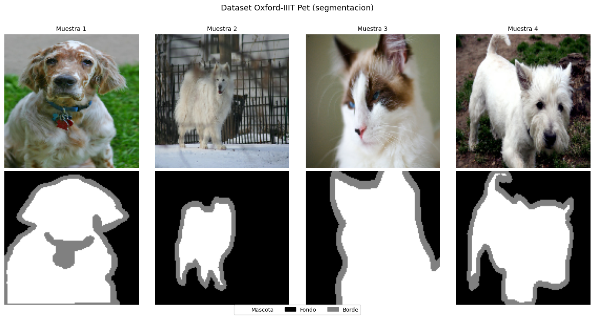
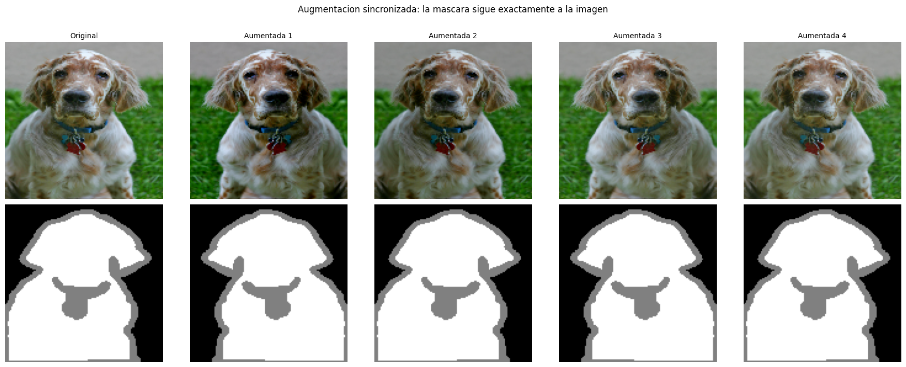
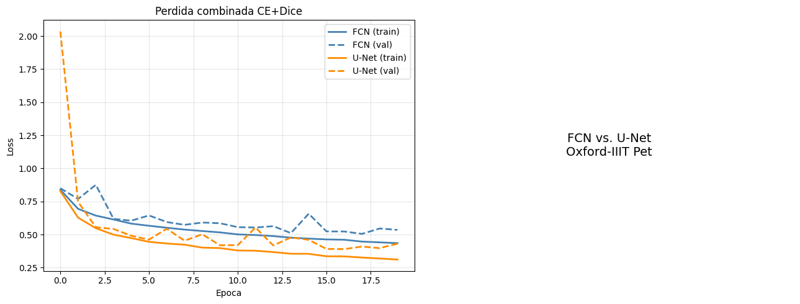
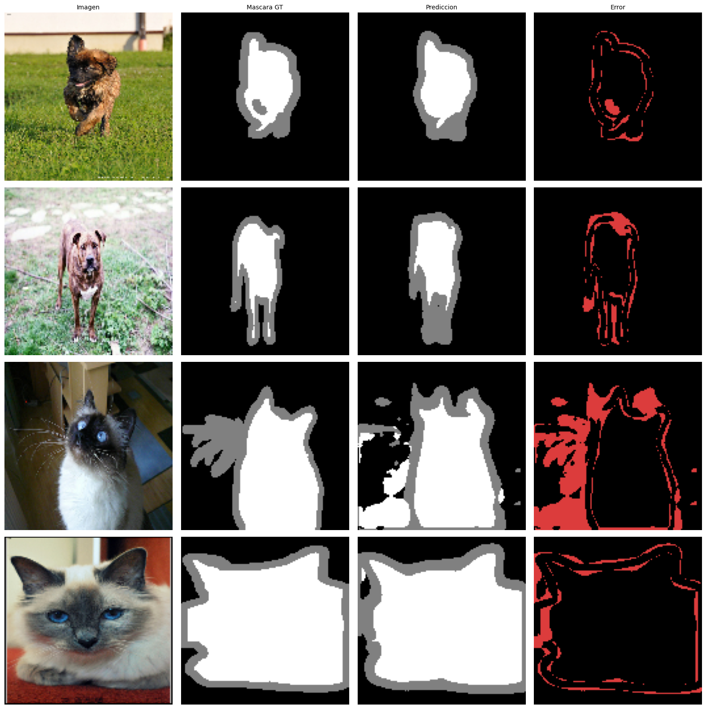
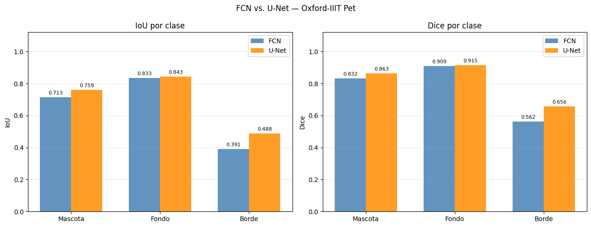

1.7 Segmentacion con Inteligencia Artificial — TensorFlow / Keras#
Este notebook implementa segmentacion semantica con el dataset Oxford-IIIT Pet, descargado automaticamente con tensorflow_datasets. Se trabajan dos arquitecturas (FCN y U-Net), cinco funciones de perdida y todas las metricas estandar del campo.
El dataset Oxford Pet contiene 7,349 imagenes de mascotas con mascaras de segmentacion en 3 clases:
Clase 0 — Mascota (foreground)
Clase 1 — Fondo (background)
Clase 2 — Borde (no clasificado / contorno)
Las mascaras vienen con valores 1, 2, 3 que se remapean a 0, 1, 2.
Contenidos#
Fundamentos y formulacion matematica
Dataset Oxford-IIIT Pet con tf_datasets
Arquitectura FCN (Fully Convolutional Network)
Arquitectura U-Net con skip connections
Funciones de perdida
Metricas de evaluacion
Data augmentation sincronizada
Entrenamiento y comparativa
Analisis de resultados
1. Fundamentos y formulacion matematica#
La segmentacion semantica asigna una etiqueta de clase a cada pixel:
La red produce logits de forma \((B, H, W, K)\). La prediccion final por pixel es:
Nota sobre formato: TensorFlow usa por defecto el formato NHWC (batch, height, width, channels), a diferencia de PyTorch que usa NCHW. Las funciones softmax, argmax y las one-hot operan sobre el ultimo eje en TF.
A diferencia de la clasificacion, la segmentacion debe preservar la resolucion espacial a lo largo de la red. Esto requiere arquitecturas encoder-decoder.
2. Dataset Oxford-IIIT Pet con tensorflow_datasets#
import tensorflow as tf
from tensorflow import keras
from tensorflow.keras import layers
import tensorflow_datasets as tfds
import numpy as np
import matplotlib.pyplot as plt
import matplotlib.patches as mpatches
tf.random.set_seed(42)
np.random.seed(42)
print(f'TensorFlow : {tf.__version__}')
print(f'TFDS : {tfds.__version__}')
print(f'GPU : {tf.config.list_physical_devices("GPU")}')
TensorFlow : 2.20.0
TFDS : 4.9.9
GPU : [PhysicalDevice(name='/physical_device:GPU:0', device_type='GPU')]
N_CLASSES = 3
IMG_H, IMG_W = 128, 128
CLASS_NAMES = ['Mascota', 'Fondo', 'Borde']
CLASS_COLORS = [
(255, 255, 255), # 0: mascota (foreground)
(0, 0, 0), # 1: fondo (background)
(128, 128, 128), # 2: borde / no clasificado
]
# Cargar Oxford Pet con tensorflow_datasets
# La primera vez descarga ~800 MB; despues queda en cache local
(ds_trainval, ds_test), info = tfds.load(
'oxford_iiit_pet:4.*.*',
split=['train', 'test'],
with_info=True,
shuffle_files=False,
)
print(f'Train+Val: {info.splits["train"].num_examples} imagenes')
print(f'Test : {info.splits["test"].num_examples} imagenes')
print(f'Features : {info.features}')
WARNING:absl:Variant folder /root/tensorflow_datasets/oxford_iiit_pet/4.0.0 has no dataset_info.json
Downloading and preparing dataset Unknown size (download: Unknown size, generated: Unknown size, total: Unknown size) to /root/tensorflow_datasets/oxford_iiit_pet/4.0.0...
Dataset oxford_iiit_pet downloaded and prepared to /root/tensorflow_datasets/oxford_iiit_pet/4.0.0. Subsequent calls will reuse this data.
Train+Val: 3680 imagenes
Test : 3669 imagenes
Features : FeaturesDict({
'file_name': Text(shape=(), dtype=string),
'head_bbox': BBoxFeature(shape=(4,), dtype=float32),
'image': Image(shape=(None, None, 3), dtype=uint8),
'label': ClassLabel(shape=(), dtype=int64, num_classes=37),
'segmentation_mask': Image(shape=(None, None, 1), dtype=uint8),
'species': ClassLabel(shape=(), dtype=int64, num_classes=2),
})
@tf.function
def load_image(datapoint):
"""
Procesa un ejemplo del dataset:
- Resize de imagen y mascara a (IMG_H, IMG_W).
- Normalizar imagen a [0, 1].
- Remapear mascara: 1->0, 2->1, 3->2 (las mascaras de Oxford Pet
usan valores 1, 2, 3; las redes esperan 0..K-1).
"""
img = tf.image.resize(datapoint['image'], [IMG_H, IMG_W])
mask = tf.image.resize(
datapoint['segmentation_mask'],
[IMG_H, IMG_W],
method=tf.image.ResizeMethod.NEAREST_NEIGHBOR # NEAREST para no interpolar etiquetas
)
img = tf.cast(img, tf.float32) / 255.0
mask = tf.cast(mask, tf.int32) - 1 # 1,2,3 -> 0,1,2
mask = tf.squeeze(mask, axis=-1) # (H, W, 1) -> (H, W)
return img, mask
# Pipeline de datos
BATCH_SIZE = 16
BUFFER_SIZE = 1000
# 80% del trainval para entrenamiento, 20% para validacion
n_total = info.splits['train'].num_examples
n_val = int(n_total * 0.2)
ds_processed = ds_trainval.map(load_image, num_parallel_calls=tf.data.AUTOTUNE)
ds_val_raw = ds_processed.take(n_val)
ds_train_raw = ds_processed.skip(n_val)
ds_test_proc = ds_test.map(load_image, num_parallel_calls=tf.data.AUTOTUNE)
train_ds = (ds_train_raw.cache()
.shuffle(BUFFER_SIZE)
.batch(BATCH_SIZE, drop_remainder=True)
.prefetch(tf.data.AUTOTUNE))
val_ds = (ds_val_raw.batch(BATCH_SIZE).prefetch(tf.data.AUTOTUNE))
test_ds = (ds_test_proc.batch(BATCH_SIZE).prefetch(tf.data.AUTOTUNE))
# Verificar
for imgs_b, masks_b in train_ds.take(1):
print(f'Batch imagenes : {imgs_b.shape} (B, H, W, C)')
print(f'Batch mascaras : {masks_b.shape} (B, H, W)')
print(f'Clases unicas : {sorted(np.unique(masks_b.numpy()).tolist())}')
Batch imagenes : (16, 128, 128, 3) (B, H, W, C)
Batch mascaras : (16, 128, 128) (B, H, W)
Clases unicas : [0, 1, 2]
def mask_to_rgb(mask):
"""Convierte mascara entera a imagen RGB para visualizacion."""
rgb = np.zeros((*mask.shape, 3), dtype=np.uint8)
for c, col in enumerate(CLASS_COLORS):
rgb[mask == c] = col
return rgb
# Visualizar ejemplos del dataset
fig, axes = plt.subplots(2, 4, figsize=(14, 7))
for i, (img, mask) in enumerate(ds_train_raw.take(4)):
axes[0, i].imshow(img.numpy())
axes[0, i].set_title(f'Muestra {i+1}', fontsize=10)
axes[0, i].axis('off')
axes[1, i].imshow(mask_to_rgb(mask.numpy()))
axes[1, i].axis('off')
axes[0, 0].set_ylabel('Imagen', fontsize=11, rotation=0, labelpad=40, va='center')
axes[1, 0].set_ylabel('Mascara', fontsize=11, rotation=0, labelpad=40, va='center')
handles = [mpatches.Patch(color=[c/255 for c in col], label=name)
for col, name in zip(CLASS_COLORS, CLASS_NAMES)]
fig.legend(handles=handles, loc='lower center', ncol=3, fontsize=9, bbox_to_anchor=(0.5, -0.02))
plt.suptitle('Dataset Oxford-IIIT Pet (segmentacion)', fontsize=13, y=1.01)
plt.tight_layout()
plt.show()

# Analisis de desbalance de clases
class_counts = np.zeros(N_CLASSES)
for _, masks in train_ds.take(50): # muestreo rapido
for c in range(N_CLASSES):
class_counts[c] += np.sum(masks.numpy() == c)
class_freqs = class_counts / class_counts.sum()
class_weights = 1.0 / (class_freqs + 1e-6)
class_weights = (class_weights / class_weights.sum() * N_CLASSES).astype('float32')
print('Distribucion de pixeles por clase:')
for c in range(N_CLASSES):
barra = '#' * int(class_freqs[c] * 50)
print(f' {CLASS_NAMES[c]:<10}: {class_freqs[c]*100:5.1f}% {barra}')
print('\nPesos de clase (inverse frequency):')
for c in range(N_CLASSES):
print(f' {CLASS_NAMES[c]:<10}: {class_weights[c]:.3f}')
Distribucion de pixeles por clase:
Mascota : 30.3% ###############
Fondo : 58.5% #############################
Borde : 11.3% #####
Pesos de clase (inverse frequency):
Mascota : 0.715
Fondo : 0.370
Borde : 1.916
3. Arquitectura FCN (Fully Convolutional Network)#
Long et al. (2015) propusieron sustituir las capas densas finales de una CNN por convoluciones \(1 \times 1\) y recuperar la resolucion con upsampling bilineal.
Limitacion: el upsampling desde \(H/16\) produce bordes difusos.
def conv_block(x, filters, n_convs=2):
"""Bloque de n convoluciones seguidas: Conv -> BN -> ReLU."""
for _ in range(n_convs):
x = layers.Conv2D(filters, 3, padding='same', use_bias=False)(x)
x = layers.BatchNormalization()(x)
x = layers.ReLU()(x)
return x
def build_fcn(n_classes=3, in_shape=(128, 128, 3), base=32):
"""
FCN para segmentacion.
Encoder: 4 niveles de doble conv + MaxPool (reduccion x16).
Cabeza : Conv 1x1 produce K logits por ubicacion espacial.
Decoder: UpSampling bilineal restaura la resolucion original.
"""
inputs = keras.Input(shape=in_shape)
x = inputs
x = conv_block(x, base); x = layers.MaxPooling2D(2)(x) # H/2
x = conv_block(x, base*2); x = layers.MaxPooling2D(2)(x) # H/4
x = conv_block(x, base*4); x = layers.MaxPooling2D(2)(x) # H/8
x = conv_block(x, base*8); x = layers.MaxPooling2D(2)(x) # H/16
# Conv 1x1 produce un logit por clase por ubicacion espacial
x = layers.Conv2D(n_classes, 1)(x)
# Upsample bilineal: factor 16 para volver al tamano original
x = layers.UpSampling2D(size=16, interpolation='bilinear')(x)
return keras.Model(inputs, x, name='fcn')
fcn_model = build_fcn(N_CLASSES, (IMG_H, IMG_W, 3))
print(f'FCN | parametros: {fcn_model.count_params():,}')
fcn_model(tf.zeros((2, IMG_H, IMG_W, 3))).shape
FCN | parametros: 1,175,907
TensorShape([2, 128, 128, 3])
4. Arquitectura U-Net con skip connections#
U-Net (Ronneberger et al., 2015) añade skip connections que concatenan cada nivel del encoder con el nivel simetrico del decoder. Resuelve la limitacion de la FCN aportando detalle espacial fino al decoder.
def double_conv(x, filters):
"""Bloque doble Conv-BN-ReLU caracteristico de U-Net."""
x = layers.Conv2D(filters, 3, padding='same', use_bias=False)(x)
x = layers.BatchNormalization()(x)
x = layers.ReLU()(x)
x = layers.Conv2D(filters, 3, padding='same', use_bias=False)(x)
x = layers.BatchNormalization()(x)
x = layers.ReLU()(x)
return x
def build_unet(n_classes=3, in_shape=(128, 128, 3), f=32):
"""
U-Net para segmentacion semantica.
En cada nivel del decoder:
1. Conv2DTranspose duplica la resolucion espacial.
2. Concatenacion con el skip del encoder del mismo nivel.
3. DoubleConv fusiona la informacion semantica y espacial.
"""
inputs = keras.Input(shape=in_shape)
# ---- Encoder con skip connections ----
s1 = double_conv(inputs, f)
p1 = layers.MaxPooling2D(2)(s1)
s2 = double_conv(p1, f*2)
p2 = layers.MaxPooling2D(2)(s2)
s3 = double_conv(p2, f*4)
p3 = layers.MaxPooling2D(2)(s3)
s4 = double_conv(p3, f*8)
p4 = layers.MaxPooling2D(2)(s4)
# ---- Bottleneck ----
bn = double_conv(p4, f*16)
# ---- Decoder con skip connections ----
u4 = layers.Conv2DTranspose(f*8, 2, strides=2, padding='same')(bn)
u4 = layers.Concatenate()([u4, s4])
u4 = double_conv(u4, f*8)
u3 = layers.Conv2DTranspose(f*4, 2, strides=2, padding='same')(u4)
u3 = layers.Concatenate()([u3, s3])
u3 = double_conv(u3, f*4)
u2 = layers.Conv2DTranspose(f*2, 2, strides=2, padding='same')(u3)
u2 = layers.Concatenate()([u2, s2])
u2 = double_conv(u2, f*2)
u1 = layers.Conv2DTranspose(f, 2, strides=2, padding='same')(u2)
u1 = layers.Concatenate()([u1, s1])
u1 = double_conv(u1, f)
# ---- Cabeza ----
outputs = layers.Conv2D(n_classes, 1)(u1)
return keras.Model(inputs, outputs, name='unet')
unet_model = build_unet(N_CLASSES, (IMG_H, IMG_W, 3), f=32)
print(f'U-Net | parametros: {unet_model.count_params():,}')
unet_model(tf.zeros((2, IMG_H, IMG_W, 3))).shape
U-Net | parametros: 7,768,995
TensorShape([2, 128, 128, 3])
5. Funciones de perdida#
class SegLoss:
"""Funciones de perdida para segmentacion. Logits en formato NHWC."""
@staticmethod
def ce(y_true, y_pred):
"""Sparse Categorical Cross-Entropy. y_true entero (B,H,W)."""
return keras.losses.sparse_categorical_crossentropy(
y_true, y_pred, from_logits=True
)
@staticmethod
def weighted_ce(class_weights):
"""Cross-Entropy ponderada por clase. Compensa el desbalance."""
cw = tf.constant(class_weights, dtype=tf.float32)
def loss_fn(y_true, y_pred):
ce = keras.losses.sparse_categorical_crossentropy(
y_true, y_pred, from_logits=True)
# Asignar peso a cada pixel segun su clase
sample_weights = tf.gather(cw, tf.cast(y_true, tf.int32))
return ce * sample_weights
return loss_fn
@staticmethod
def dice(n_classes, smooth=1.0):
"""
Dice Loss = 1 - mean_c[ 2|P ∩ G| / (|P| + |G|) ]
Trata todas las clases por igual sin importar su frecuencia.
"""
def loss_fn(y_true, y_pred):
y_true = tf.cast(y_true, tf.int32)
oh = tf.one_hot(y_true, n_classes) # (B,H,W,K)
probs = tf.nn.softmax(y_pred, axis=-1)
# Calcular Dice por clase reduciendo H y W
inter = tf.reduce_sum(probs * oh, axis=[1, 2]) # (B, K)
union = tf.reduce_sum(probs, axis=[1, 2]) + tf.reduce_sum(oh, axis=[1, 2])
dice = (2 * inter + smooth) / (union + smooth) # (B, K)
return 1 - tf.reduce_mean(dice)
return loss_fn
@staticmethod
def focal(gamma=2.0):
"""
Focal Loss: multiplica CE por (1-p)^gamma.
Reduce el peso de pixeles faciles, enfoca en bordes y clases raras.
"""
def loss_fn(y_true, y_pred):
y_true = tf.cast(y_true, tf.int32)
ce = keras.losses.sparse_categorical_crossentropy(
y_true, y_pred, from_logits=True)
probs = tf.nn.softmax(y_pred, axis=-1)
# p_t: probabilidad asignada a la clase correcta de cada pixel
pt = tf.gather(probs, tf.cast(y_true[..., None], tf.int32),
batch_dims=3)
pt = tf.squeeze(pt, axis=-1)
return tf.pow(1.0 - pt, gamma) * ce
return loss_fn
@staticmethod
def combined(n_classes, class_weights=None, lam=0.5):
"""CE + lambda*Dice. Combinacion mas robusta y usada en la practica."""
dice_fn = SegLoss.dice(n_classes)
if class_weights is not None:
ce_fn = SegLoss.weighted_ce(class_weights)
else:
ce_fn = SegLoss.ce
def loss_fn(y_true, y_pred):
return tf.reduce_mean(ce_fn(y_true, y_pred)) + lam * dice_fn(y_true, y_pred)
return loss_fn
6. Metricas de evaluacion#
def iou_per_class(y_true, y_pred, n_classes):
"""IoU = TP / (TP+FP+FN). NaN para clases ausentes."""
ious = []
for c in range(n_classes):
pred_c = (y_pred == c)
gt_c = (y_true == c)
inter = np.sum(pred_c & gt_c)
union = np.sum(pred_c | gt_c)
ious.append(inter / union if union > 0 else float('nan'))
return ious
def dice_per_class(y_true, y_pred, n_classes, eps=1e-6):
"""Dice/F1 = 2TP/(2TP+FP+FN)."""
dices = []
for c in range(n_classes):
pred_c = (y_pred == c).astype('float32')
gt_c = (y_true == c).astype('float32')
inter = np.sum(pred_c * gt_c)
denom = np.sum(pred_c) + np.sum(gt_c)
dices.append((2 * inter + eps) / (denom + eps) if denom > 0 else float('nan'))
return dices
def evaluate(model, dataset, n_classes):
"""Evalua el modelo sobre todo el dataset y retorna metricas globales."""
all_preds, all_targets = [], []
for imgs, masks in dataset:
logits = model(imgs, training=False)
preds = tf.argmax(logits, axis=-1).numpy()
all_preds.append(preds)
all_targets.append(masks.numpy())
preds = np.concatenate(all_preds)
targets = np.concatenate(all_targets)
ious = iou_per_class(targets, preds, n_classes)
dices = dice_per_class(targets, preds, n_classes)
return {
'pixel_acc' : float(np.mean(preds == targets)),
'mIoU' : float(np.nanmean(ious)),
'mean_dice' : float(np.nanmean(dices)),
'iou_per_class' : ious,
'dice_per_class': dices,
'preds': preds, 'targets': targets,
}
7. Data augmentation sincronizada#
En segmentacion, las transformaciones geometricas deben aplicarse identicamente a imagen y mascara. Las transformaciones de color solo se aplican a la imagen.
@tf.function
def sync_augment(img, mask):
"""
Augmentacion sincronizada con tf.image.
Las operaciones que afectan la geometria (flip) se aplican a ambos.
Las que afectan solo color (brillo) se aplican solo a la imagen.
"""
# Flip horizontal sincronizado
if tf.random.uniform(()) > 0.5:
img = tf.image.flip_left_right(img)
# mask es (H,W); expandir a (H,W,1) para flip y volver a contraer
mask = tf.image.flip_left_right(mask[..., None])[..., 0]
# Jitter de brillo solo en la imagen
img = tf.image.random_brightness(img, max_delta=0.1)
img = tf.image.random_contrast(img, lower=0.9, upper=1.1)
img = tf.clip_by_value(img, 0.0, 1.0)
return img, mask
# Aplicar augmentacion al pipeline de entrenamiento
train_ds_aug = (ds_train_raw
.cache()
.shuffle(BUFFER_SIZE)
.map(sync_augment, num_parallel_calls=tf.data.AUTOTUNE)
.batch(BATCH_SIZE, drop_remainder=True)
.prefetch(tf.data.AUTOTUNE))
# Visualizar augmentacion
fig, axes = plt.subplots(2, 5, figsize=(18, 7))
for i, (img, mask) in enumerate(ds_train_raw.take(1)):
axes[0, 0].imshow(img.numpy())
axes[1, 0].imshow(mask_to_rgb(mask.numpy()))
axes[0, 0].set_title('Original', fontsize=10)
for col in range(1, 5):
ia, ma = sync_augment(img, mask)
axes[0, col].imshow(ia.numpy())
axes[1, col].imshow(mask_to_rgb(ma.numpy()))
axes[0, col].set_title(f'Aumentada {col}', fontsize=10)
for ax in axes.flatten(): ax.axis('off')
axes[0, 0].set_ylabel('Imagen', fontsize=11, rotation=0, labelpad=40, va='center')
axes[1, 0].set_ylabel('Mascara', fontsize=11, rotation=0, labelpad=40, va='center')
plt.suptitle('Augmentacion sincronizada: la mascara sigue exactamente a la imagen', fontsize=12, y=1.01)
plt.tight_layout()
plt.show()

8. Entrenamiento y comparativa de arquitecturas#
# Compilar y entrenar FCN con perdida combinada
fcn_model = build_fcn(N_CLASSES, (IMG_H, IMG_W, 3))
fcn_model.compile(
optimizer=keras.optimizers.Adam(1e-3, weight_decay=1e-4),
loss=SegLoss.combined(N_CLASSES, class_weights),
)
callbacks = [
keras.callbacks.ReduceLROnPlateau(monitor='val_loss', factor=0.5, patience=5),
]
print('Entrenando FCN...')
history_fcn = fcn_model.fit(
train_ds_aug, validation_data=val_ds,
epochs=20, callbacks=callbacks, verbose=2,
)
Entrenando FCN...
Epoch 1/20
184/184 - 34s - 186ms/step - loss: 0.8391 - val_loss: 0.8505 - learning_rate: 0.0010
Epoch 2/20
184/184 - 19s - 102ms/step - loss: 0.6947 - val_loss: 0.7694 - learning_rate: 0.0010
Epoch 3/20
184/184 - 11s - 57ms/step - loss: 0.6437 - val_loss: 0.8757 - learning_rate: 0.0010
Epoch 4/20
184/184 - 7s - 40ms/step - loss: 0.6141 - val_loss: 0.6189 - learning_rate: 0.0010
Epoch 5/20
184/184 - 8s - 41ms/step - loss: 0.5830 - val_loss: 0.6053 - learning_rate: 0.0010
Epoch 6/20
184/184 - 9s - 47ms/step - loss: 0.5669 - val_loss: 0.6447 - learning_rate: 0.0010
Epoch 7/20
184/184 - 8s - 41ms/step - loss: 0.5520 - val_loss: 0.5950 - learning_rate: 0.0010
Epoch 8/20
184/184 - 11s - 59ms/step - loss: 0.5380 - val_loss: 0.5736 - learning_rate: 0.0010
Epoch 9/20
184/184 - 11s - 60ms/step - loss: 0.5271 - val_loss: 0.5913 - learning_rate: 0.0010
Epoch 10/20
184/184 - 9s - 46ms/step - loss: 0.5167 - val_loss: 0.5858 - learning_rate: 0.0010
Epoch 11/20
184/184 - 8s - 42ms/step - loss: 0.5017 - val_loss: 0.5564 - learning_rate: 0.0010
Epoch 12/20
184/184 - 8s - 46ms/step - loss: 0.4967 - val_loss: 0.5535 - learning_rate: 0.0010
Epoch 13/20
184/184 - 10s - 53ms/step - loss: 0.4888 - val_loss: 0.5637 - learning_rate: 0.0010
Epoch 14/20
184/184 - 8s - 43ms/step - loss: 0.4769 - val_loss: 0.5114 - learning_rate: 0.0010
Epoch 15/20
184/184 - 8s - 43ms/step - loss: 0.4698 - val_loss: 0.6576 - learning_rate: 0.0010
Epoch 16/20
184/184 - 11s - 61ms/step - loss: 0.4636 - val_loss: 0.5243 - learning_rate: 0.0010
Epoch 17/20
184/184 - 11s - 60ms/step - loss: 0.4613 - val_loss: 0.5236 - learning_rate: 0.0010
Epoch 18/20
184/184 - 8s - 42ms/step - loss: 0.4473 - val_loss: 0.5055 - learning_rate: 0.0010
Epoch 19/20
184/184 - 8s - 42ms/step - loss: 0.4414 - val_loss: 0.5461 - learning_rate: 0.0010
Epoch 20/20
184/184 - 11s - 60ms/step - loss: 0.4356 - val_loss: 0.5357 - learning_rate: 0.0010
# Compilar y entrenar U-Net
unet_model = build_unet(N_CLASSES, (IMG_H, IMG_W, 3), f=32)
unet_model.compile(
optimizer=keras.optimizers.Adam(1e-3, weight_decay=1e-4),
loss=SegLoss.combined(N_CLASSES, class_weights),
)
print('Entrenando U-Net...')
history_unet = unet_model.fit(
train_ds_aug, validation_data=val_ds,
epochs=20, callbacks=callbacks, verbose=2,
)
Entrenando U-Net...
Epoch 1/20
184/184 - 49s - 266ms/step - loss: 0.8289 - val_loss: 2.0346 - learning_rate: 0.0010
Epoch 2/20
184/184 - 20s - 108ms/step - loss: 0.6285 - val_loss: 0.7477 - learning_rate: 0.0010
Epoch 3/20
184/184 - 19s - 104ms/step - loss: 0.5484 - val_loss: 0.5560 - learning_rate: 0.0010
Epoch 4/20
184/184 - 19s - 104ms/step - loss: 0.4996 - val_loss: 0.5426 - learning_rate: 0.0010
Epoch 5/20
184/184 - 20s - 107ms/step - loss: 0.4736 - val_loss: 0.4915 - learning_rate: 0.0010
Epoch 6/20
184/184 - 22s - 121ms/step - loss: 0.4454 - val_loss: 0.4620 - learning_rate: 0.0010
Epoch 7/20
184/184 - 19s - 102ms/step - loss: 0.4329 - val_loss: 0.5444 - learning_rate: 0.0010
Epoch 8/20
184/184 - 19s - 103ms/step - loss: 0.4237 - val_loss: 0.4541 - learning_rate: 0.0010
Epoch 9/20
184/184 - 19s - 103ms/step - loss: 0.4019 - val_loss: 0.5028 - learning_rate: 0.0010
Epoch 10/20
184/184 - 19s - 103ms/step - loss: 0.3980 - val_loss: 0.4194 - learning_rate: 0.0010
Epoch 11/20
184/184 - 19s - 104ms/step - loss: 0.3803 - val_loss: 0.4205 - learning_rate: 0.0010
Epoch 12/20
184/184 - 19s - 102ms/step - loss: 0.3784 - val_loss: 0.5535 - learning_rate: 0.0010
Epoch 13/20
184/184 - 21s - 116ms/step - loss: 0.3681 - val_loss: 0.4182 - learning_rate: 0.0010
Epoch 14/20
184/184 - 19s - 103ms/step - loss: 0.3554 - val_loss: 0.4783 - learning_rate: 0.0010
Epoch 15/20
184/184 - 19s - 105ms/step - loss: 0.3549 - val_loss: 0.4604 - learning_rate: 0.0010
Epoch 16/20
184/184 - 20s - 108ms/step - loss: 0.3363 - val_loss: 0.3920 - learning_rate: 0.0010
Epoch 17/20
184/184 - 19s - 102ms/step - loss: 0.3355 - val_loss: 0.3904 - learning_rate: 0.0010
Epoch 18/20
184/184 - 19s - 102ms/step - loss: 0.3269 - val_loss: 0.4095 - learning_rate: 0.0010
Epoch 19/20
184/184 - 19s - 106ms/step - loss: 0.3195 - val_loss: 0.3978 - learning_rate: 0.0010
Epoch 20/20
184/184 - 19s - 106ms/step - loss: 0.3116 - val_loss: 0.4318 - learning_rate: 0.0010
# Curvas comparativas de perdida
fig, axes = plt.subplots(1, 2, figsize=(13, 5))
for hist, name, color in [(history_fcn, 'FCN', 'steelblue'),
(history_unet, 'U-Net', 'darkorange')]:
axes[0].plot(hist.history['loss'], label=f'{name} (train)', color=color, lw=2)
axes[0].plot(hist.history['val_loss'], label=f'{name} (val)', color=color, lw=2, linestyle='--')
axes[0].set(title='Perdida combinada CE+Dice', xlabel='Epoca', ylabel='Loss')
axes[0].legend(); axes[0].grid(True, alpha=0.3)
axes[1].axis('off')
axes[1].text(0.5, 0.5, 'FCN vs. U-Net\nOxford-IIIT Pet',
ha='center', va='center', fontsize=14)
plt.tight_layout()
plt.show()

9. Analisis de resultados#
fcn_res = evaluate(fcn_model, test_ds, N_CLASSES)
unet_res = evaluate(unet_model, test_ds, N_CLASSES)
print('Resultados en test set')
print('=' * 60)
print(f'{"Metrica":<20} {"FCN":>10} {"U-Net":>10}')
print('-' * 60)
for key, label in [('pixel_acc','Pixel Accuracy'), ('mIoU','mIoU'), ('mean_dice','Mean Dice')]:
print(f'{label:<20} {fcn_res[key]:>10.4f} {unet_res[key]:>10.4f}')
print('\nIoU y Dice por clase:')
print(f'{"Clase":<15} {"IoU FCN":>9} {"IoU UNet":>9} {"Dice FCN":>9} {"Dice UNet":>9}')
print('-' * 60)
fmt = lambda v: f'{v:.4f}' if not np.isnan(v) else ' N/A '
for c in range(N_CLASSES):
print(f'{CLASS_NAMES[c]:<15} '
f'{fmt(fcn_res["iou_per_class"][c]):>9} '
f'{fmt(unet_res["iou_per_class"][c]):>9} '
f'{fmt(fcn_res["dice_per_class"][c]):>9} '
f'{fmt(unet_res["dice_per_class"][c]):>9}')
Resultados en test set
============================================================
Metrica FCN U-Net
------------------------------------------------------------
Pixel Accuracy 0.8377 0.8625
mIoU 0.6456 0.6967
Mean Dice 0.7678 0.8112
IoU y Dice por clase:
Clase IoU FCN IoU UNet Dice FCN Dice UNet
------------------------------------------------------------
Mascota 0.7127 0.7586 0.8323 0.8627
Fondo 0.8331 0.8434 0.9089 0.9151
Borde 0.3910 0.4879 0.5622 0.6558
def visualize_predictions(model, dataset, n=4):
"""Muestra imagen / mascara GT / prediccion / mapa de error."""
fig, axes = plt.subplots(n, 4, figsize=(16, n*4))
for row, (imgs, masks) in enumerate(dataset.take(n)):
img = imgs[0].numpy()
mask_t = masks[0].numpy()
logits = model(imgs[:1], training=False)
pred = tf.argmax(logits, axis=-1)[0].numpy()
# Mapa de error
err = np.zeros((*mask_t.shape, 3), dtype=np.uint8)
err[(mask_t != pred)] = [220, 60, 60]
miou_i = float(np.nanmean(iou_per_class(mask_t, pred, N_CLASSES)))
axes[row, 0].imshow(img)
axes[row, 1].imshow(mask_to_rgb(mask_t))
axes[row, 2].imshow(mask_to_rgb(pred))
axes[row, 3].imshow(err)
for ax in axes[row]: ax.axis('off')
axes[row, 0].set_ylabel(f'mIoU={miou_i:.3f}', fontsize=9, rotation=0,
labelpad=55, va='center')
for ax, t in zip(axes[0], ['Imagen', 'Mascara GT', 'Prediccion', 'Error']):
ax.set_title(t, fontsize=10)
plt.tight_layout()
plt.show()
print('Predicciones de U-Net en test set:')
visualize_predictions(unet_model, test_ds, n=4)
Predicciones de U-Net en test set:

# Comparativa de IoU y Dice por clase
x, w = np.arange(N_CLASSES), 0.35
fi = [v if not np.isnan(v) else 0 for v in fcn_res['iou_per_class']]
ui = [v if not np.isnan(v) else 0 for v in unet_res['iou_per_class']]
fd = [v if not np.isnan(v) else 0 for v in fcn_res['dice_per_class']]
ud = [v if not np.isnan(v) else 0 for v in unet_res['dice_per_class']]
fig, axes = plt.subplots(1, 2, figsize=(13, 5))
for ax, fv, uv, lbl in [(axes[0], fi, ui, 'IoU'), (axes[1], fd, ud, 'Dice')]:
b1 = ax.bar(x - w/2, fv, w, label='FCN', color='steelblue', alpha=0.85)
b2 = ax.bar(x + w/2, uv, w, label='U-Net', color='darkorange', alpha=0.85)
ax.bar_label(b1, fmt='%.3f', padding=3, fontsize=8)
ax.bar_label(b2, fmt='%.3f', padding=3, fontsize=8)
ax.set_xticks(x); ax.set_xticklabels(CLASS_NAMES)
ax.set_ylabel(lbl); ax.set_ylim(0, 1.12)
ax.set_title(f'{lbl} por clase'); ax.legend()
ax.grid(True, axis='y', alpha=0.3)
plt.suptitle('FCN vs. U-Net — Oxford-IIIT Pet', fontsize=12)
plt.tight_layout()
plt.show()

# Tabla resumen: cuando usar cada arquitectura y perdida
print('Guia de seleccion de arquitectura y perdida')
print('=' * 100)
arq = [
('FCN', 'Encoder CNN + Upsample bilineal', 'Bajo', 'Bajo', 'Prototipos rapidos'),
('U-Net', 'Encoder-Decoder + Skip Connections', 'Medio', 'Alto', 'Estandar medico/general'),
('U-Net++', 'Skip Connections anidadas', 'Medio', 'Muy Alto', 'Maxima precision de borde'),
('DeepLab v3+', 'Dilated Conv + ASPP + Decoder', 'Alto', 'Muy Alto', 'Multiples escalas'),
('SegFormer', 'Transformer Encoder + MLP Decoder', 'Alto', 'Muy Alto', 'Datasets grandes'),
('SAM', 'ViT-H + Prompt Encoder', 'Muy Alto', 'SOTA', 'Zero-shot'),
]
print(f'{"Arquitectura":<15} {"Componentes":<35} {"Params":<10} {"Precision":<12} {"Uso"}')
print('-' * 100)
for r in arq:
print(f'{r[0]:<15} {r[1]:<35} {r[2]:<10} {r[3]:<12} {r[4]}')
print()
print('=' * 100)
loss_tabla = [
('Cross-Entropy', 'Clases balanceadas, baseline'),
('Weighted CE', 'Desbalance moderado'),
('Dice Loss', 'Objetos pequenos, desbalance severo, medico'),
('Focal Loss', 'Desbalance + pixeles dificiles (bordes, oclusiones)'),
('CE + Dice', 'Opcion robusta general'),
]
print(f'{"Perdida":<20} {"Cuando usarla"}')
print('-' * 80)
for r in loss_tabla:
print(f'{r[0]:<20} {r[1]}')
Guia de seleccion de arquitectura y perdida
====================================================================================================
Arquitectura Componentes Params Precision Uso
----------------------------------------------------------------------------------------------------
FCN Encoder CNN + Upsample bilineal Bajo Bajo Prototipos rapidos
U-Net Encoder-Decoder + Skip Connections Medio Alto Estandar medico/general
U-Net++ Skip Connections anidadas Medio Muy Alto Maxima precision de borde
DeepLab v3+ Dilated Conv + ASPP + Decoder Alto Muy Alto Multiples escalas
SegFormer Transformer Encoder + MLP Decoder Alto Muy Alto Datasets grandes
SAM ViT-H + Prompt Encoder Muy Alto SOTA Zero-shot
====================================================================================================
Perdida Cuando usarla
--------------------------------------------------------------------------------
Cross-Entropy Clases balanceadas, baseline
Weighted CE Desbalance moderado
Dice Loss Objetos pequenos, desbalance severo, medico
Focal Loss Desbalance + pixeles dificiles (bordes, oclusiones)
CE + Dice Opcion robusta general
Conclusiones#
Dataset: Oxford-IIIT Pet con sus 3 clases (mascota / fondo / borde) es un benchmark estandar de segmentacion. La descarga automatica via tensorflow_datasets lo hace ideal para experimentos reproducibles.
FCN vs. U-Net: la FCN limita su precision de borde porque el upsampling bilineal desde \(H/16\) no recupera detalles finos. Las skip connections de U-Net proveen detalle espacial en cada nivel de resolucion, lo que se traduce en IoU y Dice superiores especialmente en la clase borde.
Funciones de perdida: la Cross-Entropy pura falla con desbalance porque el gradiente lo domina la clase mayoritaria. Dice Loss trata todas las clases por igual independientemente de su frecuencia. La perdida combinada CE + Dice es la mas robusta: CE aporta convergencia estable y Dice optimiza la superposicion region a region.
Metricas: la Pixel Accuracy es engañosa con desbalance. mIoU y Dice por clase son las referencias porque promedian sin sesgo hacia la clase mayoritaria.
Referencias#
Long, J., Shelhamer, E., & Darrell, T. (2015). Fully convolutional networks for semantic segmentation. CVPR 2015.
Ronneberger, O., Fischer, P., & Brox, T. (2015). U-Net: Convolutional networks for biomedical image segmentation. MICCAI 2015.
Lin, T.Y., et al. (2017). Focal loss for dense object detection. ICCV 2017.
Parkhi, O.M., et al. (2012). Cats and Dogs. CVPR 2012 — Oxford-IIIT Pet dataset.